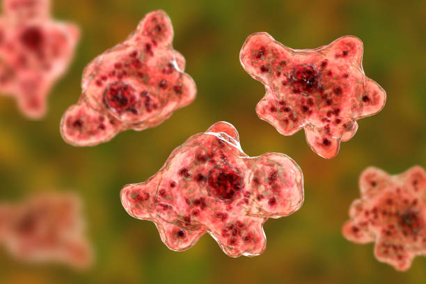
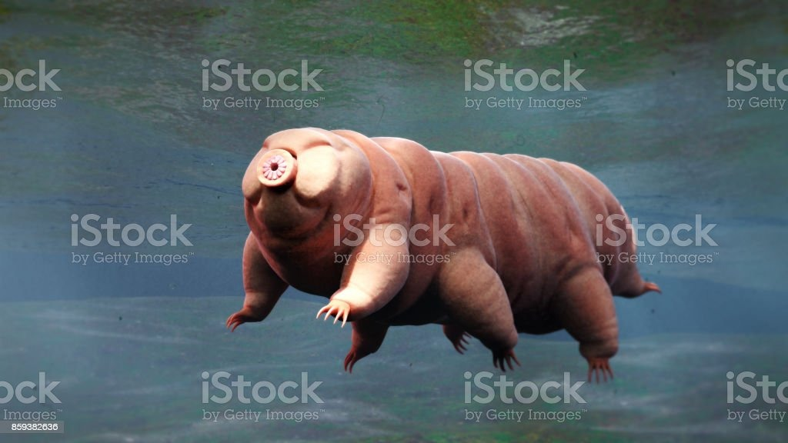
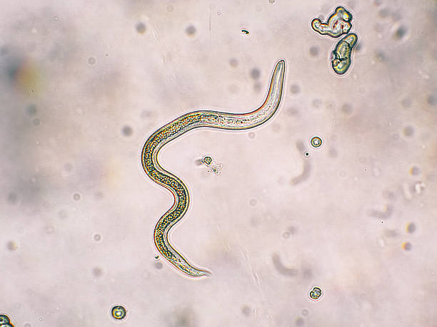
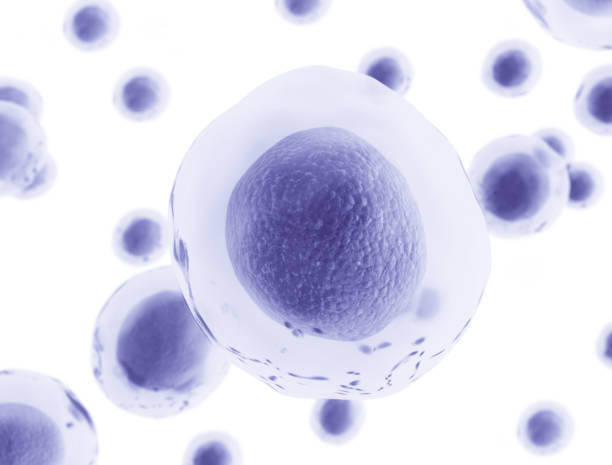

AMEOBA
TARDIGRADE
NEMATODE
Human CELL
The human cell is in your body. But Tardigrades, Ameobas, and Nematodes Mainly exist in aquatic territories!!
A tardigrade is like a little water bear!!!
an Ameoba is like a jacked version of a human cell such as a neutrophil, and those guys are tough against bacteria!! If an ameoba were to meet a human cell, they'd eat em!!!!